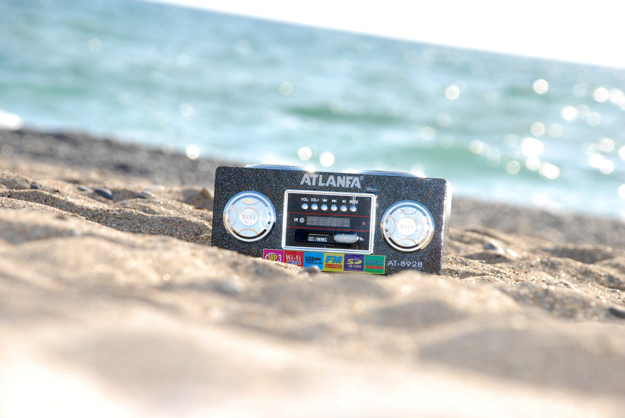
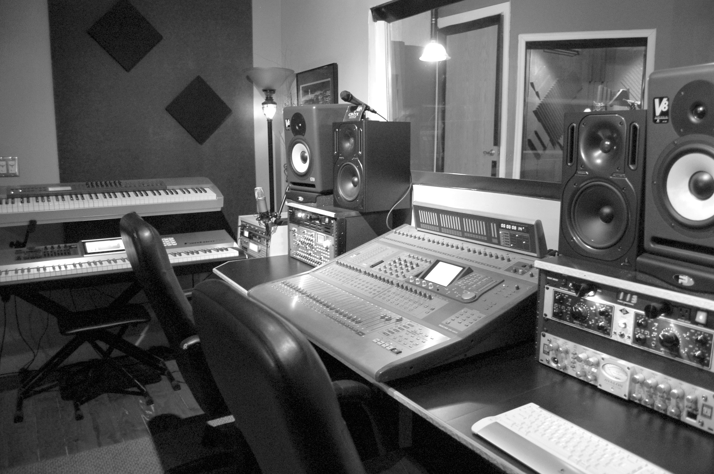
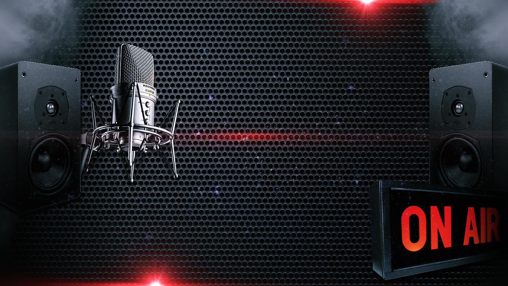
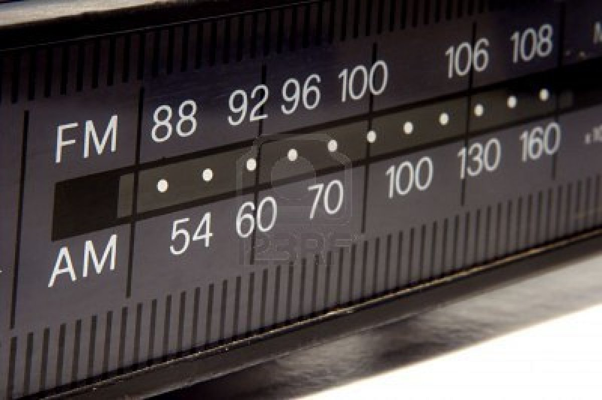

RadioUnicaribe
LICENCIAS
CONTÁCTANOS
PORTAFOLIO
MEDIOS
PARRILLA
CONÓCENOS
INICIO
¡Parrilla de programas!
¿Agenda libre? aprovecha tu tiempo...

Miércoles, de 18hrs a 19hrs
Viernes, de 16hrs a 17hrs
Viernes. 15hrs a 16hrs

¡Caribe + Caribe!

Martes de 10am a 11am
